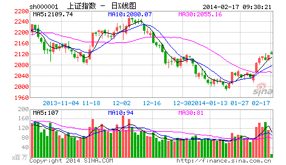

要世界杯了，在世界杯时谈论股票是一件很无趣的事情，而且，全世界的人都知道，世界杯前后，股票市场几乎都要大跌，这个常识，虽然并不比所有有关所谓庄家的常识更值得常识，但至少有趣，并不像所谓庄家一般无聊。还可以增加一句的是，足球至少有帅男，而见过的如此之多的所谓庄家里，连长得不那么歪瓜裂枣的都少，这的确是实际情况，并不是开玩笑。
但你的喜好，就是你的死亡陷阱！在市场中要生存，第一条就是在市场中要杜绝一切喜好。市场的诱惑，永远就是通过你的喜好而陷你于死亡。市场中需要的是露水之缘而不是比翼之情，天长地久之类的东西和市场无关。市场中唯一值得天长地久的就是赢钱，任何一个来市场的人，其目的就是赢钱，任何与赢钱无关的都是废话。
必须明白，任何让你买入一只股票的理由，并不是因为这股票如何好或被忽悠得如何好，只是你企图通过买入而赢钱，能赢钱的股票就是好的，否则都是废话。因此，市场中的任何喜好，都是把你引入迷途的陷阱，必须逐一看破，进而洗心革面，才能在市场上生存。
当然，能看清楚自己周围的市场陷阱，还只是第一步，更进一步，要学会利用市场陷阱来赢钱。当你要买的时候，空头的陷阱就是你的最佳机会，当你要卖的时候，多头的陷阱当然就是你的天堂。这市场，永远不缺卖在最低点，买在最高点的人，这世界上没有什么是可以让所有人赢钱的，连大牛市中都有很多人要亏损累累。而市场中的行为，就如同一个修炼上乘武功的过程，最终能否成功，还是要落实到每个人的智慧、秉性、天赋、勤奋上来！
（待续）